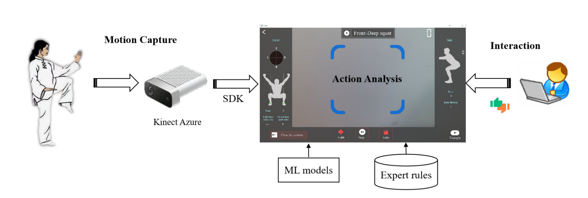

1 Beijing Sport University
Abstract—Visual-based human action analysis is an important
research topic in the field of computer vision, and has great
application prospect in intelligent sports. Home-based fitness
is increasingly common in recent years, however lacking of
accurate feedback and scientific guidance main easily lead to
problems such as exercise injuries. In this paper, we propose
an analysis system for Tai Chi action quality assessment and
visual analysis with a consumer RGB-D camera. The main
innovative work is as follows: 1. for home-based fitness action
evaluation, we design a real-time intelligent analysis system
combined with expert rules through a consumer RGB-D camera;
2. we transform the evaluation of 24-form Tai Chi Chuan into an
artificial intelligence (AI) model, and realize action recognition
and assessment through computer vision; 3. to train the AI
model, we build a new dataset named TaiChi-24, which contains
1,408 samples with RGB-D images and 3D skeletons. We carry
out evaluation experiments and analyses, and the experimental
results have shown the advantage of applying our evaluation
method on the proposed TaiChi-24 dataset.

If someone wants to download the TaiChi-24 dataset, please fill in the
agreement,
and email Kehao Ran<rkh117@bsu.edu.cn>
or Jianwei Li <jianwei@bsu.edu.cn> to request the download link.
@inproceedings{2022 TaiChi24,
title={Tai Chi Action Quality Assessment and Visual Analysis with a Consumer RGB-D Camera},
author={Li, Jianwei and Hu, Haiqing and Xin, Qingjun and Wang, Xinyu and Li, Jinyang and Shen, Yanfei},
booktitle={ International Workshop on Multimedia Signal Processing (MMSP)},
year={2022},
}